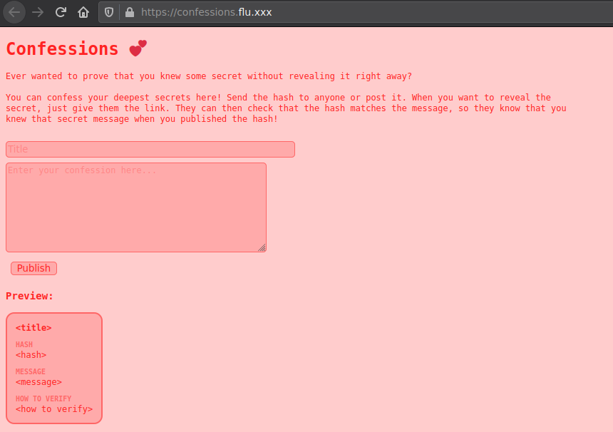
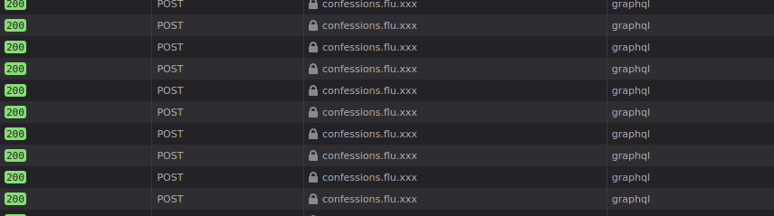
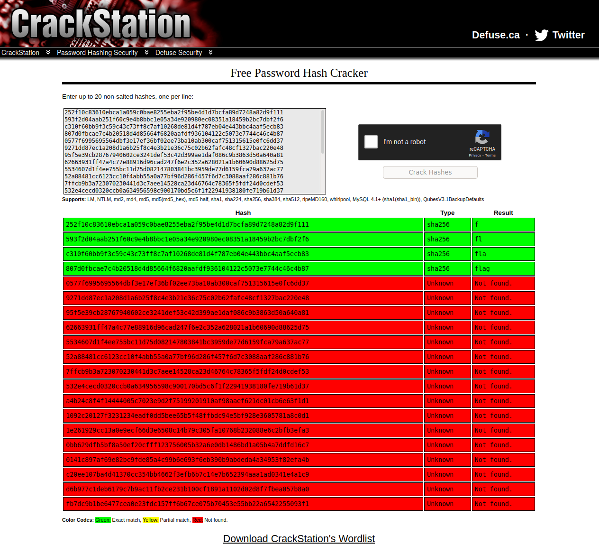

This is a writeup for the "Confessions" challenge from the hacklu CTF. I consider this a great challenge, as it uses a technology, namely graphql, that isn't often used in most CTFs and due to me never having used it before required some searching, but not in an exaggerated way.
The start of all challenges: getting to know the challenge. In this case, the first thing we see is a pink page:

The functionality this page provides can be described as follows: You enter a title and a message, then receive a hash. You can post this hash anywhere and then, sometime in the future post a link containing the message.
This concept allows proving that you've got something afterwards. For example, I used such a concept in the nahamcon-CTF to prove my complete flagleak. Overall, this allows proving that some information was accessible at some given time.
After slightly inspecting the page, the next step would be to look into the page source:
<!doctype html>
<html>
<head>
<meta charset="utf-8">
<title>Confessions 💕</title>
<link rel="stylesheet" href="confessions.css">
</head>
<body>
<h1>
<a href="/">Confessions</a>
💕
</h1>
<div id="input">
<div class="description">
Ever wanted to prove that you knew some secret without
revealing it right away?
<br><br>
You can confess your deepest secrets here!
Send the hash to anyone or post it.
When you want to reveal the secret, just give them the link.
They can then check that the hash matches the message,
so they know that you knew that secret message when you
published the hash!
</div>
<input id="title" placeholder="Title">
<textarea id="message" placeholder="Enter your confession here..."></textarea>
<button id="publish">Publish</button>
<h3>Preview:</h3>
</div>
<div id="preview" class="confession">
<h4 class="title"><title></h4>
<div class="label">Hash</div>
<div class="hash"><hash></div>
<div class="label">Message</div>
<div class="message"><message></div>
<div class="label">How to verify</div>
<div class="how-to-verify"><how to verify></div>
</div>
<script src="confessions.js"></script>
</body>
</html>
The page doesn't consist of much, there's some static html content, some css and some javascript. The static content doesn't do anything, so lets don't even bother into looking into it. The interesting part is the javascript, in this case, the confessions.js file. Let's go through it block by block:
The part below "talks with the GraphQL endpoint", so it communicates with the GraphQL system in the backend sending a JSON body containing the operation name (hardcoded to null), a query (more regarding that in the next block) and variables to the backend. It then reads the response and returns the response data.
// talk to the GraphQL endpoint
const gql = async (query, variables={}) => {
let response = await fetch('/graphql', {
method: 'POST',
headers: {
'content-type': 'application/json',
},
body: JSON.stringify({
operationName: null,
query,
variables,
}),
});
let json = await response.json();
if (json.errors && json.errors.length) {
throw json.errors;
} else {
return json.data;
}
};
This block below defines the queries sent to the backend, these are used in the code above when sent to the backend. More on them later on.
let { hash } = await previewHash(title.value, message.value);
let confession = await getConfession(hash);
await show({
...confession,
message: message.value,
});
};
title.oninput = update;
message.oninput = update;
This block publishes the confession, it adds the confession to the backend and uses the given id to redirect to the url with the appended id that is used.
// publish a confession
publish.onclick = async () => {
title.disabled = true;
message.disabled = true;
publish.disabled = true;
let { id } = await addConfession(title.value, message.value);
location.href = `#${id}`;
location.reload();
};
This block uses the confession id given in the url and displays that confession.
// show a confession when one is given in the location hash
Now after having some basic understanding of what this javascript does, we need a better understanding of how this actually works, as in: what can we do?, what can we break?
Well, we can insert a title and a message. While entering this, we get a live preview of the hash. If we look into the requests sent while typing, we see the following:

...lots and lots of requests to the /graphql endpoint. Thus our next task is born: looking into these requests.
"query": "{__type(name: \"Confession\") {name, fields { name } }}",
"variables": {
"hash": "Confession"
}
}
{
"data": {
"__type": {
"name": "Confession",
"fields": [
{
"name": "id"
},
{
"name": "title"
},
{
"name": "hash"
},
{
"name": "message"
}
]
}
}
}
We've already got this information: we can extract if from the queries defined in the javascript, but never the less, It's nice to know that there aren't more fields that we're possibly overlooking.
As the "accessLog" should not be in production, there seems to be an error that is somehow critical. Thus, getting the accessLog seems like a logical next step. In order to get the accessLog, we first need to get the name of the fields in the accessLog, as we want to fetch all fields.
"description": "The `String` scalar type represents textual data, represented as UTF-8 character sequences. The String type is most often used by GraphQL to represent free-form human-readable text."
}
},
{
"name": "name",
"description": "",
"type": {
"name": "String",
"kind": "SCALAR",
"description": "The `String` scalar type represents textual data, represented as UTF-8 character sequences. The String type is most often used by GraphQL to represent free-form human-readable text."
}
},
{
"name": "args",
"description": "",
"type": {
"name": "String",
"kind": "SCALAR",
"description": "The `String` scalar type represents textual data, represented as UTF-8 character sequences. The String type is most often used by GraphQL to represent free-form human-readable text."
}
}
]
}
}
}
As you can see, there are three fields: "timestamp", "name" and "args". With this information, we can now fetch the access log:
"timestamp": "Fri Oct 23 2020 16:09:08 GMT+0000 (Coordinated Universal Time)",
"name": "accessLog",
"args": "{}"
}
]
}
}
Now this is interesting. My first through was to use one of the predefined query strings in order to leak the message, but the provided function taking in a hash doesn't return the message, but just the title of the message, so we need to find another solution...
One of the first things to do when getting a hash, is to throw it into crackstation and find out if it is crackable, so we extract the hashes from the accessLog response and throw the first few into crackstation. We get this as a result:

As you can see, the first n hashes consist of the first n chars from the flag. Due to crackstations wordlist not knowing the rest of the flag format, it can't show us a result. But we've got the next hashes, so in order to find out what that next char after flag is, we can simply try out all possible combinations (flaga, flagb, ...), hash them and compare the hash with the hash we've got: